February, ?th 2021¶
Motivation: Simple analysis on data. Learn how it is structured, come up with clarification questions.
Results: In this document I focus on Ca sinals.
# HIDE CODE
import re
import os
import numpy as np
import pandas as pd
import nibabel as nib
from scipy.stats import pearsonr
from os.path import join as pjoin
from tqdm.notebook import tqdm
import matplotlib.pyplot as plt
import seaborn as sns
sns.set_style('whitegrid')
# HIDE CODE
data_dir = '/home/hadi/Documents/Ca-fMRI'
p = re.compile("part-\d")
ca_tmp = {}
ca = {}
bold = {}
animals = ['sub-SLC07']
for file_name in sorted(os.listdir(data_dir)):
meta = file_name.split('_')
sub = next(filter(lambda x: 'sub' in x, meta))
ses = next(filter(lambda x: 'ses' in x, meta))
run = next(filter(lambda x: 'run' in x, meta))
task = next(filter(lambda x: 'task' in x, meta))
key = '_'.join([sub, ses, run, task])
skip = True
for item in animals:
if item in file_name:
skip = False
if skip:
continue
with open(pjoin(data_dir, file_name)) as f:
data = nib.load(f.name).get_fdata()
if 'bold' in file_name:
bold[key] = data
elif 'ca' in file_name:
key += ':' + p.search(file_name).group(0)
ca_tmp[key] = data
else:
print(file_name)
continue
for k in bold:
_ca_data = []
for i in range(1, 4):
_ca_data.append(ca_tmp[k + ':part-{:d}'.format(i)])
ca[k] = np.concatenate(_ca_data, axis=-1)
ca = {k: ca[k] for k in sorted(ca)}
bold = {k: bold[k] for k in sorted(bold)}
bold.keys(), ca.keys()
(dict_keys(['sub-SLC07_ses-2_run-1_task-rest', 'sub-SLC07_ses-2_run-2_task-led', 'sub-SLC07_ses-2_run-3_task-rest', 'sub-SLC07_ses-2_run-4_task-led', 'sub-SLC07_ses-2_run-5_task-rest', 'sub-SLC07_ses-2_run-6_task-led', 'sub-SLC07_ses-2_run-7_task-rest']),
dict_keys(['sub-SLC07_ses-2_run-1_task-rest', 'sub-SLC07_ses-2_run-2_task-led', 'sub-SLC07_ses-2_run-3_task-rest', 'sub-SLC07_ses-2_run-4_task-led', 'sub-SLC07_ses-2_run-5_task-rest', 'sub-SLC07_ses-2_run-6_task-led', 'sub-SLC07_ses-2_run-7_task-rest']))
[item.shape for item in bold.values()], [item.shape for item in ca.values()]
([(64, 64, 78, 600),
(64, 64, 78, 600),
(64, 64, 78, 600),
(64, 64, 78, 600),
(64, 64, 78, 600),
(64, 64, 78, 600),
(64, 64, 78, 600)],
[(256, 250, 1, 6000),
(256, 250, 1, 5999),
(256, 250, 1, 6000),
(256, 250, 1, 6000),
(256, 250, 1, 6000),
(256, 250, 1, 6000),
(256, 250, 1, 5999)])
key = 'sub-SLC07_ses-2_run-7_task-rest'
nt = bold[key].shape[-1]
ca_frequency = 10
exclude_seconds = 50
start = ca[key].shape[-1] - ((nt - exclude_seconds) * ca_frequency)
end = ca[key].shape[-1]
plt.figure(figsize=(16, 10))
plt.subplot(311)
plt.plot(ca[key][128, 90, 0][start:end])
plt.subplot(312)
plt.plot(ca[key][128, 90, 0][start:start+2000])
plt.subplot(313)
plt.plot(ca[key][128, 90, 0][start:start+500])
[<matplotlib.lines.Line2D at 0x7f690abe32e0>]
source = (128, 128, 0)
corrs = np.zeros(ca[key].shape[:-1])
corrs.shape
(256, 250, 1)
for i in tqdm(range(ca[key].shape[0])):
for j in range(ca[key].shape[1]):
for k in range(ca[key].shape[2]):
r, p = pearsonr(ca[key][i, j, k, :], ca[key][source[0], source[1], source[2], :])
if not np.isnan(r):
corrs[i, j, k] = r
/home/hadi/.local/lib/python3.8/site-packages/scipy/stats/stats.py:3845: PearsonRConstantInputWarning: An input array is constant; the correlation coefficent is not defined.
warnings.warn(PearsonRConstantInputWarning())
corrs.shape
(256, 250, 1)
plt.figure(figsize=(18, 6))
plt.subplot(121)
plt.imshow(corrs[..., 0], vmin=-1, vmax=1, cmap='bwr')
plt.plot(source[0], source[1], color='b', marker='o')
plt.colorbar()
plt.subplot(122)
plt.imshow(corrs[..., 0])
plt.plot(source[0], source[1], color='b', marker='o')
plt.colorbar()
<matplotlib.colorbar.Colorbar at 0x7ff221eb32b0>
plt.figure(figsize=(12, 5))
plt.subplot(121)
plt.imshow(ca[key][..., 1070], vmin=-ca[key].max(), vmax=ca[key].max(), cmap='seismic')
plt.colorbar()
plt.subplot(122)
plt.imshow(ca[key][..., 1130], vmin=-ca[key].max(), vmax=ca[key].max(), cmap='seismic')
plt.colorbar()
plt.tight_layout()
plt.show()
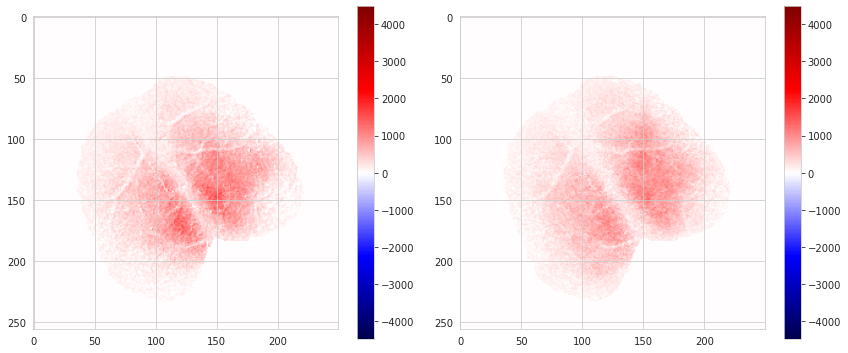
intvl = range(300, 800)
plt.figure(figsize=(20, 4))
plt.plot(intvl, ca[key][128, 128, 0][intvl])
plt.plot(intvl, ca[key][128, 129, 0][intvl])
[<matplotlib.lines.Line2D at 0x7f5a39a33640>]
np.unravel_index(ca[key].argmin(), ca[key].shape)
(79, 83, 0, 1)
plt.imshow(ca[key][..., 0, 0])
plt.colorbar()
<matplotlib.colorbar.Colorbar at 0x7f5a38561a60>

norm = np.linalg.norm(ca[key].reshape(-1, ca[key].shape[-1]), axis=0)
plt.plot(norm)
[<matplotlib.lines.Line2D at 0x7f5a384d1070>]
X = ca[key][..., 0, :].copy()
X[X<0] += np.abs(np.mean(X[X<0]))
X = np.maximum(0.0, X)
nt = bold[key].shape[-1]
ca_frequency = 10
exclude_seconds = 10
start = ca[key].shape[-1] - ((nt - exclude_seconds) * ca_frequency)
end = ca[key].shape[-1]
X = X[..., range(start, end)]
X /= X.std()
X.shape
(256, 250, 5900)
X.var()
0.9999999999999973
plt.figure(figsize=(12, 5))
plt.subplot(121)
plt.imshow(ca[key].mean(-1)[..., 0])
plt.colorbar()
plt.subplot(122)
plt.imshow(X.mean(-1))
plt.colorbar()
plt.show()
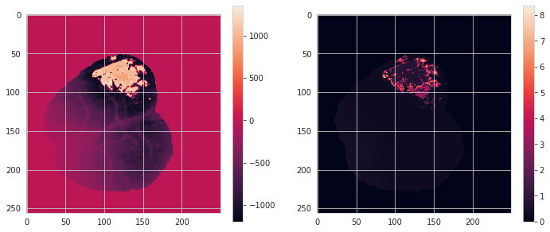
intvl = range(300, 800)
plt.figure(figsize=(20, 4))
plt.plot(intvl, X[128, 128][intvl])
plt.plot(intvl, X[128, 200][intvl])
plt.grid()
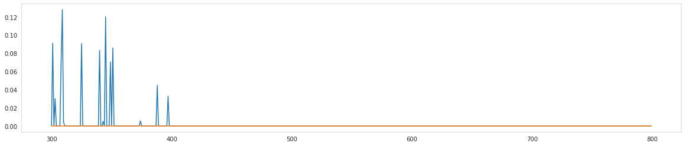
X = X.reshape(-1, X.shape[-1]).T
X.shape
(5900, 64000)
from sklearn.decomposition import NMF
model = NMF(
n_components=8,
init='nndsvd',
max_iter=1000,
random_state=42,
)
W = model.fit_transform(X)
model.components_.shape, model.reconstruction_err_
((8, 64000), 12975.70362514647)
nrows, ncols = 2, 4
fig, axes = plt.subplots(nrows=nrows, ncols=ncols, figsize=(12, 5), sharex='all', sharey='all')
for c in range(model.n_components_):
i, j = c // ncols, c % ncols
comp = model.components_[c].reshape(ca[key].shape[:2])
im = axes[i, j].imshow(comp, cmap='nipy_spectral')#'' 'gist_ncar')
axes[i, j].set_title('comp # {:d}'.format(c))
plt.colorbar(im, ax=axes[i, j])
fig.tight_layout()
plt.show()
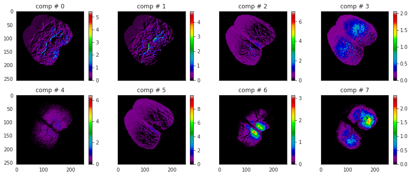
X.shape, W.shape
((5900, 64000), (5900, 8))
plt.plot(W);
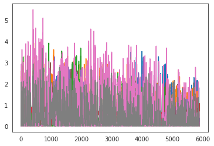
intvl = range(300, 800)
plt.figure(figsize=(16, 4))
plt.plot(W[intvl]);
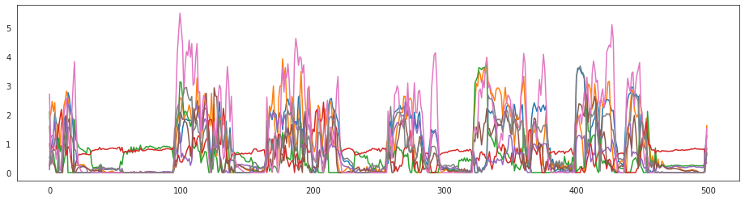
plt.plot(W.var(0))
[<matplotlib.lines.Line2D at 0x7f74ab8fbd60>]
np.argsort(W.var(0))
array([3, 5, 4, 7, 2, 0, 1, 6])
intvl = range(300, 800)
plt.figure(figsize=(16, 4))
plt.plot(W[intvl][:, [7, 0, 1]])
[<matplotlib.lines.Line2D at 0x7f74a5a43220>,
<matplotlib.lines.Line2D at 0x7f74a5a43df0>,
<matplotlib.lines.Line2D at 0x7f74a5a43dc0>]
X_pred = model.inverse_transform(W)
X_pred.shape
(5900, 64000)
X.shape
(5900, 64000)
from sklearn.metrics import r2_score
plt.figure(figsize=(10, 4))
plt.subplot(121)
plt.imshow(X[500].reshape(*ca[key].shape[:2]))
plt.colorbar()
plt.subplot(122)
plt.imshow(X_pred[500].reshape(*ca[key].shape[:2]))
plt.colorbar()
<matplotlib.colorbar.Colorbar at 0x7f74ab95f2b0>
plt.plot(ca[key][128, 128, 0])
[<matplotlib.lines.Line2D at 0x7f74a7240cd0>]
def smoothen(arr: np.ndarray, filter_sz: int = 5):
shape = arr.shape
assert 1 <= len(shape) <= 2, "1 <= dim <= 2d"
kernel = np.ones(filter_sz) / filter_sz
if len(shape) == 1:
return np.convolve(arr, kernel, mode='same')
else:
smoothed = np.zeros(arr.shape)
for i in range(arr.shape[0]):
smoothed[i] = np.convolve(arr[i], kernel, mode='same')
return smoothed
smothed = smoothen(ca[key][128, 128, 0], filter_sz=400)
plt.plot(smothed)
[<matplotlib.lines.Line2D at 0x7f74a57711c0>]
plt.plot(bold[key][30, 30, 30])
[<matplotlib.lines.Line2D at 0x7f74a8f99580>]
indxs = np.argsort(W[:, 3] - W[:, 6])
indxs[:10], indxs[-10:]
(array([ 399, 727, 400, 2305, 728, 2409, 398, 593, 487, 675]),
array([105, 104, 938, 16, 106, 812, 508, 85, 17, 813]))
plot_indxs = [813, 508, 106, 2305, 727, 399]
# plot_indxs = [x + 99 for x in plot_indxs]
# good stuff: [203, 386, 195, 67, 418, 1609]
nrows, ncols = 2, len(plot_indxs)
fig, axes = plt.subplots(nrows=nrows, ncols=ncols, figsize=(25, 7), sharex='all', sharey='all')
vmax = np.max(X[plot_indxs])
vmin = np.min(X[plot_indxs])
for c in range(ncols):
t = plot_indxs[c]
im = axes[0, c].imshow(X[t].reshape(*ca[key].shape[:2]))#, vmin=vmin, vmax=vmax)
axes[0, c].set_title('t = {:d}, true'.format(t))
plt.colorbar(im, ax=axes[0, c])
im = axes[1, c].imshow(X_pred[t].reshape(*ca[key].shape[:2]))#, vmin=vmin, vmax=vmax)
axes[1, c].set_title('t = {:d}, pred'.format(t))
plt.colorbar(im, ax=axes[1, c])
fig.tight_layout()
plt.show()
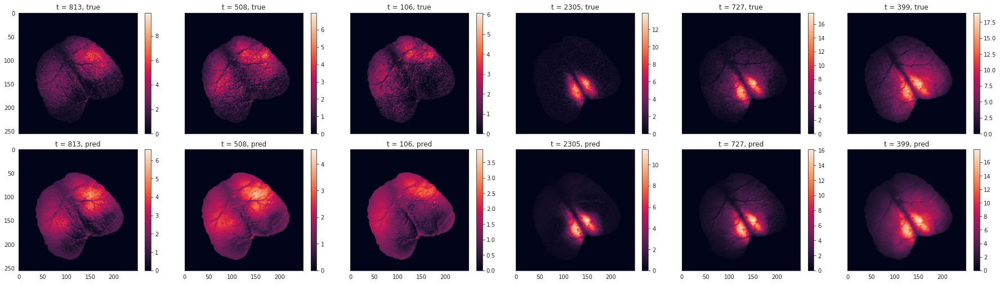
norms = np.linalg.norm(data2.reshape(-1, data2.shape[-1]), ord=np.inf, axis=0)
norms.shape
(2090,)
plt.plot(norms)
[<matplotlib.lines.Line2D at 0x7f18d9ba0af0>]
plt.plot(W[3])
plt.plot(W[1360])
[<matplotlib.lines.Line2D at 0x7f18d9ab7970>]
ICA¶
X = data2.reshape(-1, data2.shape[-1]).T
# X += abs(X.min())
X.shape
(2090, 64000)
from sklearn.decomposition import FastICA
ica = FastICA(
n_components=8,
random_state=42,
)
X_ica = ica.fit_transform(X)
X_ica.shape
(2090, 8)
ica.components_.shape
(8, 64000)
nrows, ncols = 2, 4
fig, axes = plt.subplots(nrows=nrows, ncols=ncols, figsize=(12, 5), sharex='all', sharey='all')
for c in range(model.n_components_):
i, j = c // ncols, c % ncols
comp = ica.components_[c].reshape(data2.shape[:2])
vmax = np.max(np.abs(comp))
im = axes[i, j].imshow(comp, cmap='seismic', vmin=-vmax, vmax=vmax)#'' 'gist_ncar')
axes[i, j].set_title('comp # {:d}'.format(c))
plt.colorbar(im, ax=axes[i, j])
fig.tight_layout()
plt.show()
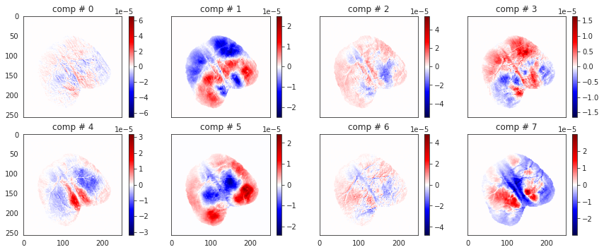
X_ica.shape
(2090, 8)
intvl = range(300, 800)
plt.figure(figsize=(16, 4))
plt.plot(X_ica[intvl]);
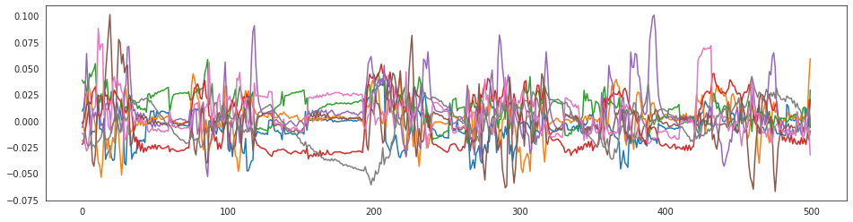
X_ica.var(0)
array([0.00047847, 0.00047847, 0.00047847, 0.00047847, 0.00047847,
0.00047847, 0.00047847, 0.00047847])
intvl = range(300, 800)
plt.figure(figsize=(16, 4))
plt.plot(X_ica[intvl][:, [1, 4, 5]])
[<matplotlib.lines.Line2D at 0x7f18d99daac0>,
<matplotlib.lines.Line2D at 0x7f18d99dabb0>,
<matplotlib.lines.Line2D at 0x7f18d99dac70>]
X_pred = ica.inverse_transform(X_ica)
X_pred.shape
(2090, 64000)
X.shape
(2090, 64000)
plt.figure(figsize=(10, 4))
plt.subplot(121)
plt.imshow(X[10].reshape(*data2.shape[:2]))
plt.colorbar()
plt.subplot(122)
plt.imshow(X_pred[10].reshape(*data2.shape[:2]))
plt.colorbar()
<matplotlib.colorbar.Colorbar at 0x7f18d98893a0>

indxs = np.argsort(X_ica[:, 4] - X_ica[:, 5])
indxs[:10], indxs[-10:]
(array([ 2, 0, 22, 25, 23, 24, 1, 26, 116, 18]),
array([132, 827, 774, 417, 775, 826, 66, 69, 67, 68]))
plot_indxs = [68, 826, 417, 22, 116, 18]
nrows, ncols = 2, len(plot_indxs)
fig, axes = plt.subplots(nrows=nrows, ncols=ncols, figsize=(25, 7), sharex='all', sharey='all')
vmax = np.max(X[plot_indxs])
vmin = np.min(X[plot_indxs])
for c in range(ncols):
t = plot_indxs[c]
im = axes[0, c].imshow(X[t].reshape(*data2.shape[:2]))#, vmin=vmin, vmax=vmax)
axes[0, c].set_title('t = {:d}, true'.format(t))
plt.colorbar(im, ax=axes[0, c])
im = axes[1, c].imshow(X_pred[t].reshape(*data2.shape[:2]))#, vmin=vmin, vmax=vmax)
axes[1, c].set_title('t = {:d}, pred'.format(t))
plt.colorbar(im, ax=axes[1, c])
fig.tight_layout()
plt.show()
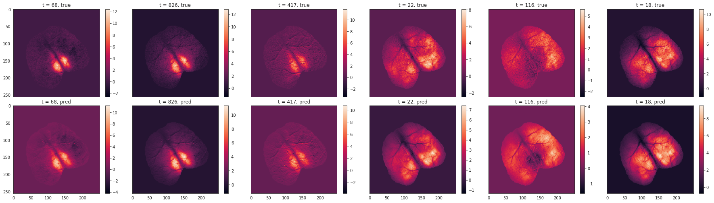
PCA¶
from sklearn.decomposition import PCA
pca = PCA(
n_components=8,
svd_solver='full',
)
X_pca = pca.fit_transform(X)
X_pca.shape
(2090, 8)
pca.components_.shape, pca.explained_variance_ratio_ * 100
((8, 64000),
array([75.68989764, 5.50015838, 3.41498745, 1.88958672, 1.3358353 ,
1.04752444, 0.78383764, 0.7476424 ]))
nrows, ncols = 2, 4
fig, axes = plt.subplots(nrows=nrows, ncols=ncols, figsize=(12, 5), sharex='all', sharey='all')
for c in range(model.n_components_):
i, j = c // ncols, c % ncols
comp = pca.components_[c].reshape(data2.shape[:2])
vmax = np.max(np.abs(comp))
im = axes[i, j].imshow(comp, cmap='seismic', vmin=-vmax, vmax=vmax)#'' 'gist_ncar')
axes[i, j].set_title('comp # {:d}'.format(c))
plt.colorbar(im, ax=axes[i, j])
fig.tight_layout()
plt.show()
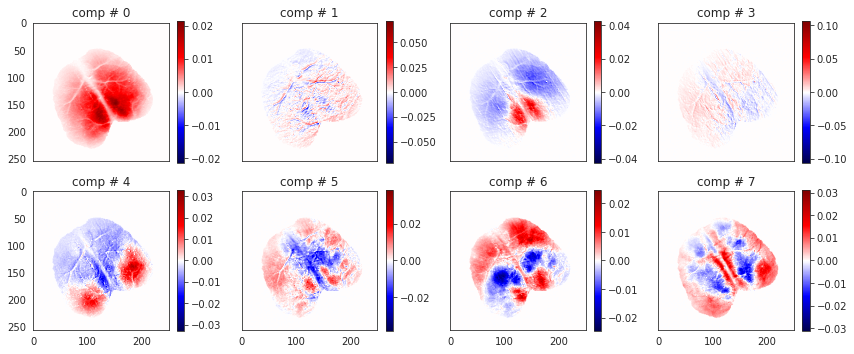
This could mean either of two things:¶
Those regions were more active (dorsal?)
Or this is an artifact inherent to the data. E.g. those parts of the cortex were not more active, but the light was more accessible to the microscope from those regions?
X_pca.shape
(2090, 8)
intvl = range(300, 800)
plt.figure(figsize=(16, 4))
plt.plot(X_pca[intvl]);
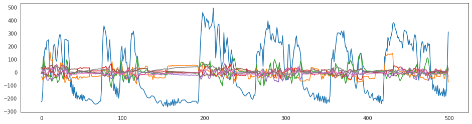
X_pca.var(0)
array([35893.84747916, 2608.29849228, 1619.46365988, 896.08441395,
633.48306814, 496.7595914 , 371.71339127, 354.54880014])
intvl = range(300, 800)
plt.figure(figsize=(16, 4))
plt.plot(X_pca[intvl][:, [1, 2, 4]])
[<matplotlib.lines.Line2D at 0x7f18c9c335e0>,
<matplotlib.lines.Line2D at 0x7f18c9c33e50>,
<matplotlib.lines.Line2D at 0x7f18c9c33e20>]
X_pred = pca.inverse_transform(X_pca)
X_pred.shape
(2090, 64000)
X.shape
(2090, 64000)
plt.figure(figsize=(10, 4))
plt.subplot(121)
plt.imshow(X[10].reshape(*data2.shape[:2]))
plt.colorbar()
plt.subplot(122)
plt.imshow(X_pred[10].reshape(*data2.shape[:2]))
plt.colorbar()
<matplotlib.colorbar.Colorbar at 0x7f18d9bd48b0>
indxs = np.argsort(X_pca[:, 4] - X_pca[:, 2])
indxs[:10], indxs[-10:]
(array([ 67, 68, 66, 69, 65, 826, 14, 827, 418, 132]),
array([1682, 23, 1683, 19, 24, 2, 25, 1, 18, 0]))
plot_indxs = [18, 25, 1683, 67, 826, 418]
# [68, 826, 417, 22, 116, 18]
nrows, ncols = 2, len(plot_indxs)
fig, axes = plt.subplots(nrows=nrows, ncols=ncols, figsize=(25, 7), sharex='all', sharey='all')
vmax = np.max(X[plot_indxs])
vmin = np.min(X[plot_indxs])
for c in range(ncols):
t = plot_indxs[c]
im = axes[0, c].imshow(X[t].reshape(*data2.shape[:2]))#, vmin=vmin, vmax=vmax)
axes[0, c].set_title('t = {:d}, true'.format(t))
plt.colorbar(im, ax=axes[0, c])
im = axes[1, c].imshow(X_pred[t].reshape(*data2.shape[:2]))#, vmin=vmin, vmax=vmax)
axes[1, c].set_title('t = {:d}, pred'.format(t))
plt.colorbar(im, ax=axes[1, c])
fig.tight_layout()
plt.show()
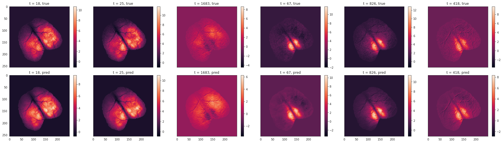
r2_score(X, X_pred) * 100
89.3953570126434
fMRI¶
X = data.reshape(-1, data.shape[-1]).T
X += abs(X.min())
X.shape
(600, 319488)
from sklearn.decomposition import NMF
model = NMF(
n_components=16,
# alpha=1,
# l1_ratio=1,
init='nndsvd',
max_iter=300,
random_state=42,
)
W = model.fit_transform(X)
/home/hadi/.local/lib/python3.8/site-packages/sklearn/decomposition/_nmf.py:1090: ConvergenceWarning: Maximum number of iterations 300 reached. Increase it to improve convergence.
warnings.warn("Maximum number of iterations %d reached. Increase it to"
model.components_.shape, model.reconstruction_err_
((16, 319488), 508907.3728253777)
nrows, ncols = 4, 4
fig, axes = plt.subplots(nrows=nrows, ncols=ncols, figsize=(10, 8), sharex='all', sharey='all')
for c in range(model.n_components_):
i, j = c // ncols, c % ncols
comp = model.components_[c].reshape(data.shape[:3])
im = axes[i, j].imshow(comp[..., 17], cmap='nipy_spectral')#'' 'gist_ncar')
axes[i, j].set_title('comp # {:d}'.format(c))
plt.colorbar(im, ax=axes[i, j])
fig.tight_layout()
plt.show()
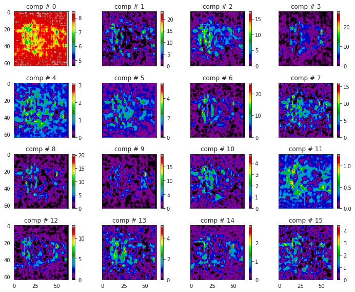